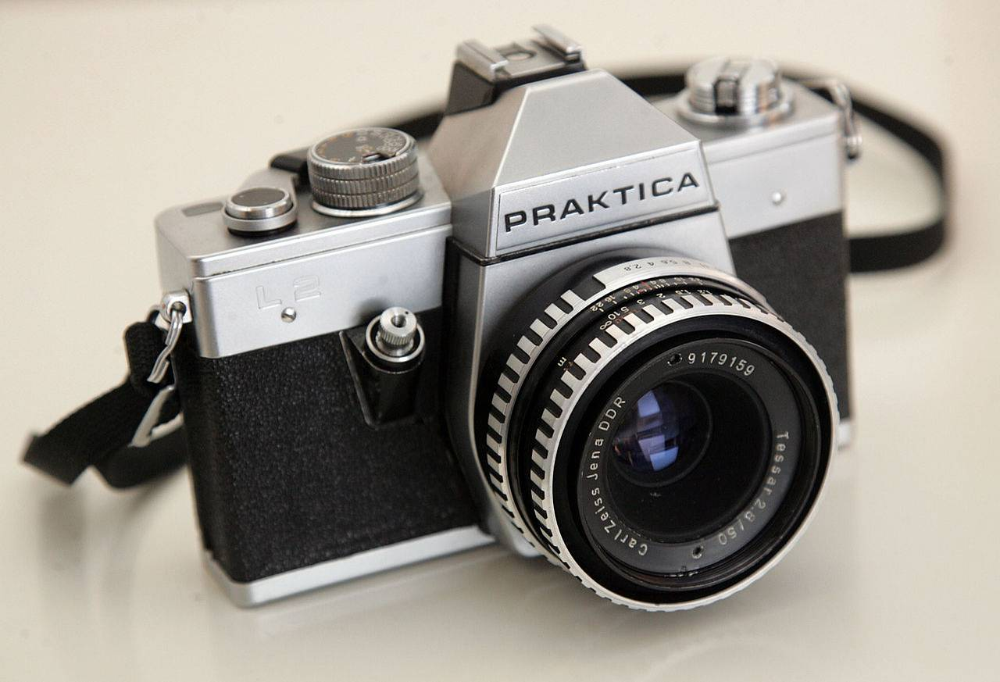
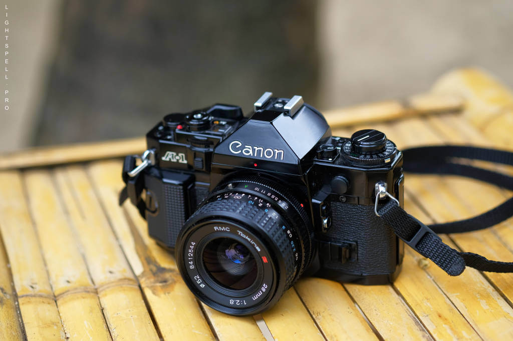
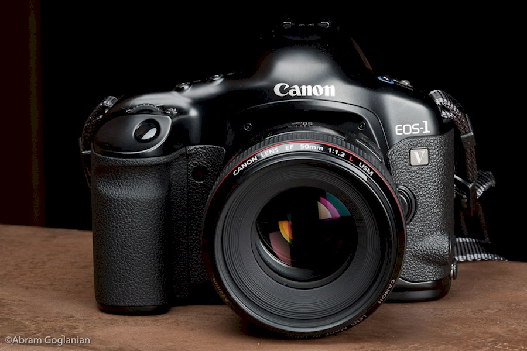

Film Cameras




Praktica L2 specifications:
Lens: Carl Zeiss Jena 50mm F/2.8 Tessar
Aperture: f/2.8 up to f/22
Focus: manual
Mount: M42
Shutter: metal curtain with travel focal plane-shutter, 1s to 1/1000s and bulb mode
Material: metal
Flash: hot shoe, 1/125s flash x-sync
Film: 35 mm, 24x36 mm film exposed, manual advance lever
Praktica LTL3 specifications:
Lens: Pentacon 50mm F/1.8 auto
Aperture: f/2.8 up to f/22
Focus: manual
Mount: M42
Shutter: mechanically controlled, vertical-moving metal-blade focal plane shutter, 1s to 1/1000s and bulb mode
Material: metal
Flash: hot shoe, 1/125 sec flash x-sync
Film: 35 mm, 24x36 mm film exposed, manual advance lever
Canon A1 specifications:
Lens: Tokina FD 28mm F/2.8
Aperture: f/2.8 up to f/16
Focus: manual
Mount: Canon FD mount (usable with 4 full aperture metering AE modes and with stopped-down AE), Canon FL (usable with stopped-down AE)
Shutter: Cloth focal plane shutter with four spindles. Electronically controlled, stepless, from 30 sec. to 1/1000s and bulb mode. Shock and noise damper mechanisms are incorporated.
Material: aluminum alloy chassis and outer cosmetic (ABS) plastic panels
Flash: hot shoe, 1/60 sec flash x-sync
Film: 35 mm, 24x36 mm film exposed, ISO 6 to ISO 12830 in 1/3 step increments, manual advance lever
Canon EOS 1V specifications:
Lens: Canon EF 50mm F/1.2 USM
Aperture: f/1.2 up to f/16
Focus: manual or automatic (TTL-AREA-SIR with a CMOS sensor, Area AF with 45 focusing points)
Mount: Canon EF mount
Shutter: vertical-travel, focal-plane shutter with all speeds electronically-controlled, 1s to 1/8000s and bulb mode
Material: rubber-covered magnesium alloy body
Flash: hot shoe, X-sync at 1/250 sec flash
Film: 35 mm, 24x36 mm film exposed, Automatic. After film is loaded and the back closed, the film advances to frame 1 automatically, taking about 1 sec.